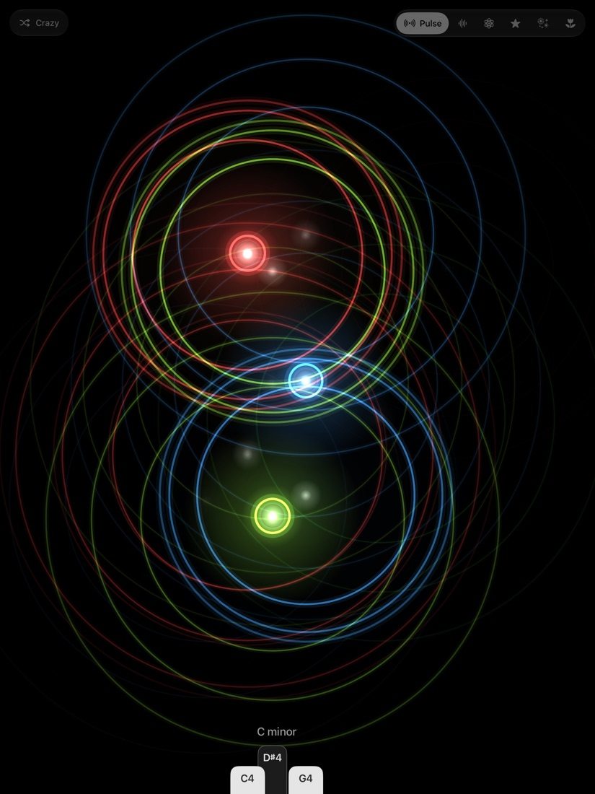
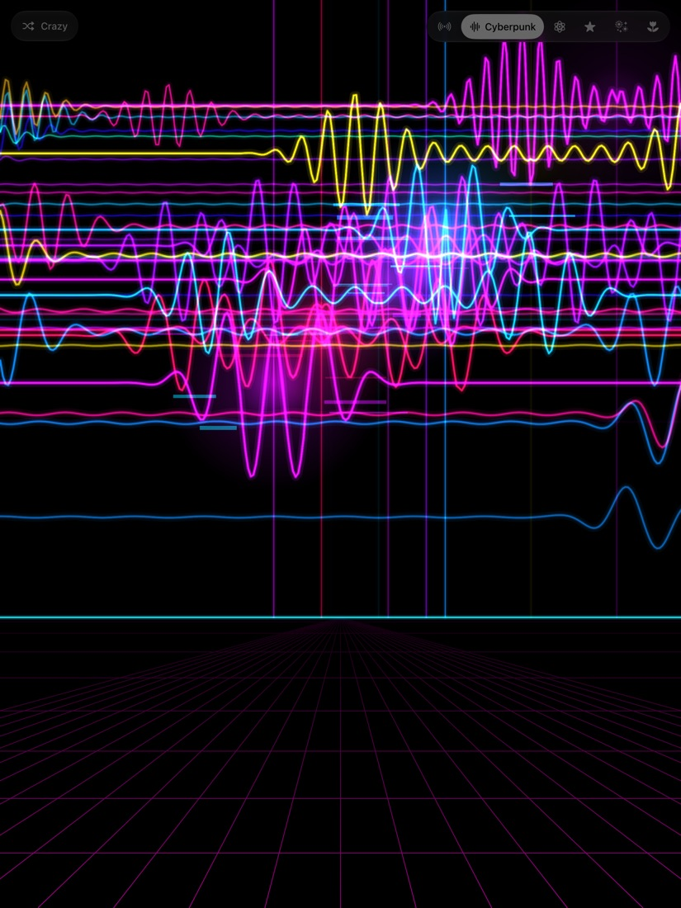
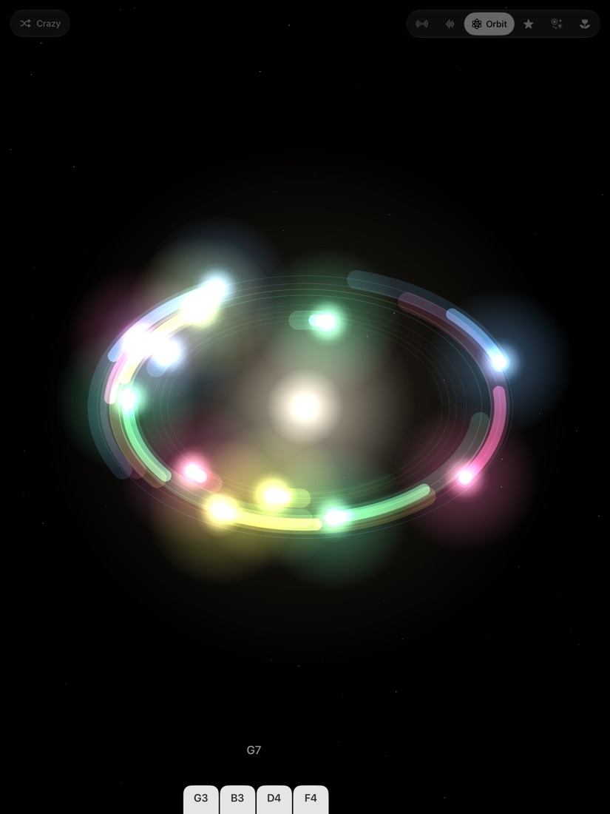
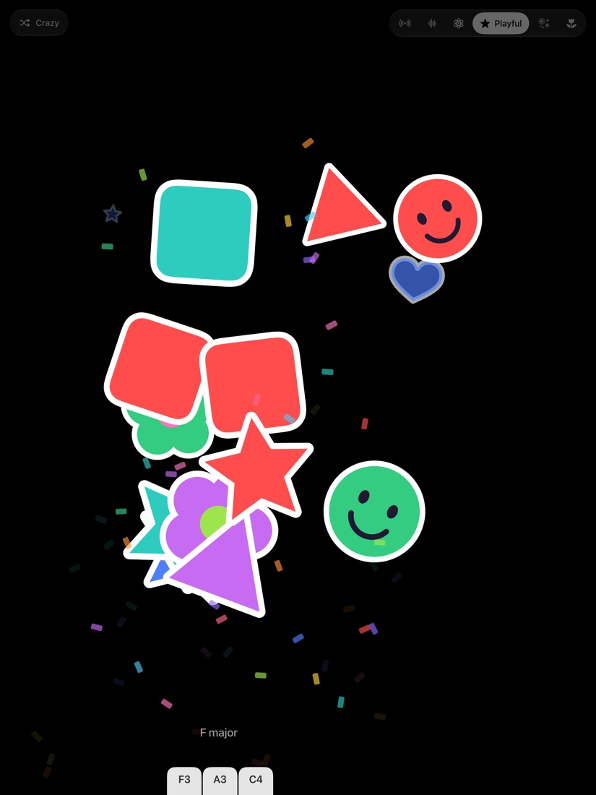
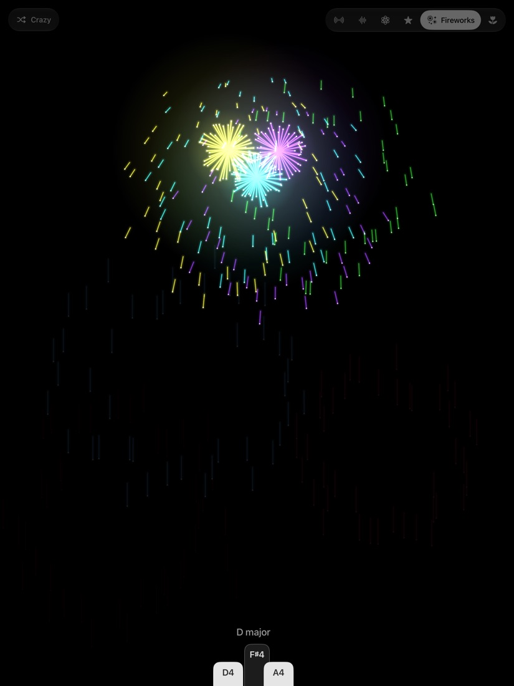
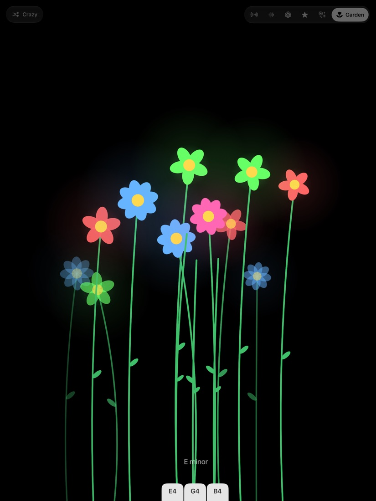

Play a note. See it bloom.
Stand your iPad on the music stand and play. Every key has its own colour. Low notes are big and slow, high notes are small and quick, and the harder you play the brighter they get.

Pulse
Rings of light spreading from every note.

Cyberpunk
Neon waves racing over a glowing grid.

Orbit
Notes circling a bright core.

Playful
Stars, hearts and smiley stickers with confetti.

Fireworks
Rockets that climb and burst.

Garden
Flowers that grow as you play.
Crazy mode
Switch it on and the theme changes by itself while you play.
Live keys
A small tab rises from the bottom of the screen under every key you press, with its name: C4, F♯3. White keys get white tabs, black keys get dark ones. Play a chord and its name appears above them: A minor, G7.
Three ways to play
Just play
Mind Pulse hears your keyboard or piano through the iPad's microphone. Nothing to plug in.
Plug in
Connect a MIDI keyboard by USB cable and every note and chord shows up exactly as you play it. The edge of the screen lights up at the port the moment your keyboard is found. From then on only the keyboard plays.
Touch
No keyboard nearby? Touch the screen and play it with your fingers.
Good to know: through the microphone, single notes are picked up best. Big chords and very soft playing work better with a cable.
Your sound stays on your iPad.
Mind Pulse listens only to work out which notes you are playing. Sound is analysed on your iPad, in the moment. It is never recorded, saved or sent anywhere.
With a cable plugged in, the microphone is switched off. No account, no ads, no tracking. The app does not connect to the internet.
Read the privacy policyNeed a hand?
Answers to the common questions are on the support page, along with an email address to reach me.
Go to support